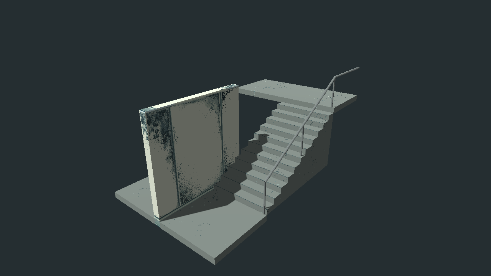
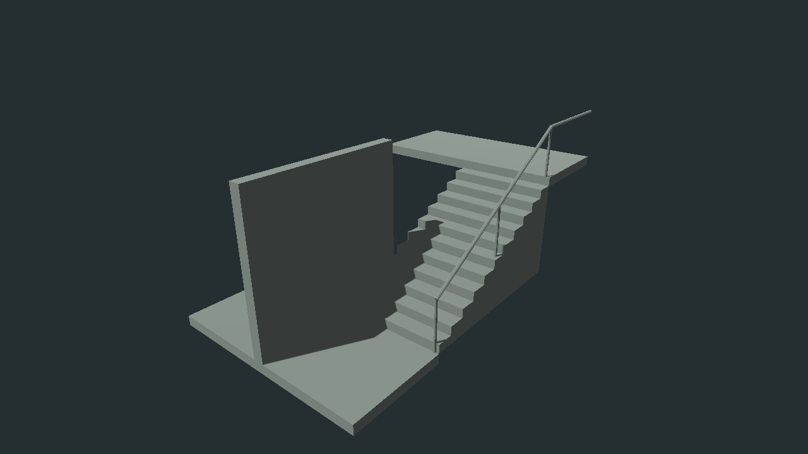
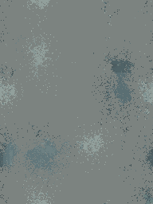

消防楼梯：保留颗粒的局部折中
首轮偏花，近乎纯色的 quiet1 又被指出矫枉过正。当前回到首版，由 PixelLab 只减弱几处强对比斑块，保留材料颗粒；Aseprite 独立层修正遮罩偏色。墙身仍沿用 r24。当前候选待审图。
1280×720 原图；相同48°透视和临时中性审图光。上段墙、返程梯跑与屋顶为剖切省略，不代表正式建筑缺失。没有新增最终灯带或运动感应。
Blender 工程 · GLB · 制作记录／边界
同机位总览：首版 → 当前折中候选
踏步近看
平台近看
过平版 quiet1（已否定，仅作边界参考）

不能把这一版当成认可基准。
工程灰模参考

当前主贴图

192×256，80px/m。PixelLab 原生裁片＋Aseprite 一种异常底色的独立修正层。本次反馈后共3张请求、30生成点，剩余101点。Aseprite 母版、Blender 和 GLB 已同步。Pixel Canals 仅作为人工观察的风格硬参考，未向生成服务上传其内容。